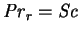
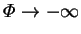
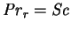
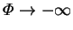
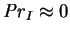
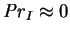

Ranganathan and Viskanta (1988) reported numerical solutions for plane vertical square cavities. The interdiffusion Prandtl number was set to zero and the Schmidt number was taken equal to the (reference) Prandtl number. The problem is therefore completely analogous to the isothermal mass transfer problem.
There is also some analysis of the effect of transpiration.
Solutions for the vapour mass fraction and temperature
profiles formally similar to those derived here in the narrow cavity limit
(
 , see §4.4)
are given for two somewhat inappropriate cases,
both with
, see §4.4)
are given for two somewhat inappropriate cases,
both with  : when
 so that the
distributions of temperature and vapour mass fraction are identical
(if the boundary conditions are analogous) and the density is uniform;
and
 for
which buoyancy forces are supposed to be overwhelmed by the
transpiration-induced flow. The latter is inconsistent with the nonslip
boundary conditions at the floor and the ceiling of the cavity, although the
Reynolds number would be infinite in this case;
is a singular perturbation problem, with the regions of nonuniformity being the
floor and ceiling (see Van Dyke 1964, ch. 7, for a discussion of viscous flow
at large Reynolds numbers). They did not present any numerical
solutions for large negative mass transfer rate factors to compare with the
analysis.
: when
 so that the
distributions of temperature and vapour mass fraction are identical
(if the boundary conditions are analogous) and the density is uniform;
and
 for
which buoyancy forces are supposed to be overwhelmed by the
transpiration-induced flow. The latter is inconsistent with the nonslip
boundary conditions at the floor and the ceiling of the cavity, although the
Reynolds number would be infinite in this case;
is a singular perturbation problem, with the regions of nonuniformity being the
floor and ceiling (see Van Dyke 1964, ch. 7, for a discussion of viscous flow
at large Reynolds numbers). They did not present any numerical
solutions for large negative mass transfer rate factors to compare with the
analysis.
Transpiration is included but the interdiffusion energy flux is neglected
which is not particularly consistent (§6.3).
Since the first requires  , the second
implies
.
The latter would only make sense if the partial specific heat
of the vapour were approximately equal to that of the gas, which is usually
not the case (see §2.3.2). The neglect of interdiffusion
led to the absurd result of
the one-dimensional energy transfer rate depending on the partial specific
heat capacity of the gas (§4.4).
, the second
implies
.
The latter would only make sense if the partial specific heat
of the vapour were approximately equal to that of the gas, which is usually
not the case (see §2.3.2). The neglect of interdiffusion
led to the absurd result of
the one-dimensional energy transfer rate depending on the partial specific
heat capacity of the gas (§4.4).